The model review, round 3 (2026-11-16)
The four looks you decided to fix from round 2's list, and the question about Ash on the lava. Only how the bodies are drawn changed: no fight, number or rule. Before and after are pictured in the real game: the Climb ruler's own door fight, and the bosses in their own rooms with their moves cast for real.
In short
- Fallen rulers lie on the floor. All 15 rulers: their lowest point at the end of the fall went from 0.1 to 1.5 m under the floor to 0.00 to 0.03 m. The body is lifted by exactly what its pose needs, frame by frame, so the Scarab Colossus lies on its shell and the Crow King on his cloak.
- Ash's feet stay on the floor. In the slam, the Charge's wind-up, Drag Under, the quake, the rock, the kneel and the fall, his legs went 0.6 to 2.4 m under the floor; now 0.00 m in all of them. His rigid legs now push up into his body when he crouches.
- The Heart of Noon's crown keeps its rays up. In its last phase the crown kept turning, so its long rays came round underneath: its lowest point over two minutes was -1.09 m. Now it sways to and fro: lowest +0.81 m, and +1.78 m kneeling.
- A kneeling ruler holds its staff up. The Crow King's staff no longer hangs head-down to the floor. The staff's head is up by his shoulder and its foot planted in front. The other four staff rulers (the Elder Root, the Thorn Mother, the Prism Mother, the Lamp Warden) kneel the same way; none of the five staffs goes under the floor.
- Ash on the lava: not a fault in the fight. His Charge always stops 1.4 m inside the floor's edge (16 m from the middle; he stops at 14.61 m at most). His body is about 1.8 m wide from its middle, so its shoulders hang over the stone lip, not over the lava, and from the game's steep camera his tall body is drawn out over the lava beyond it. A player standing at the edge sees the same. Details below.
Nothing a fight counts changed: the seven speed-test fights (perf prints) are the same before and after, and three heroes' fight prints too (below). Heroes are not touched: every change is for the Climb's own figures (rulers) or a boss's body.
1. A fallen ruler lies on the floor
When you win a ruler's door fight, it plays the animation pack's death clip, which lays a figure on its back. On the big rulers what is thick at the back went through the floor. Now a fallen Climb figure is lifted by exactly what its pose needs, every frame of the fall. (A first try eased the lift down slowly, and the Crow King hung in the air for a moment as his cloak swung under him. It now follows the pose exactly: he tips, lifts on his cloak and lands.)
The Scarab Colossus, its door fight on floor 21
Each pair: the game's camera, then from the side. Kneeling, then falling at 0.3, 0.6, 0.9 and 1.2 s. Before (lowest at the end -1.57 m):
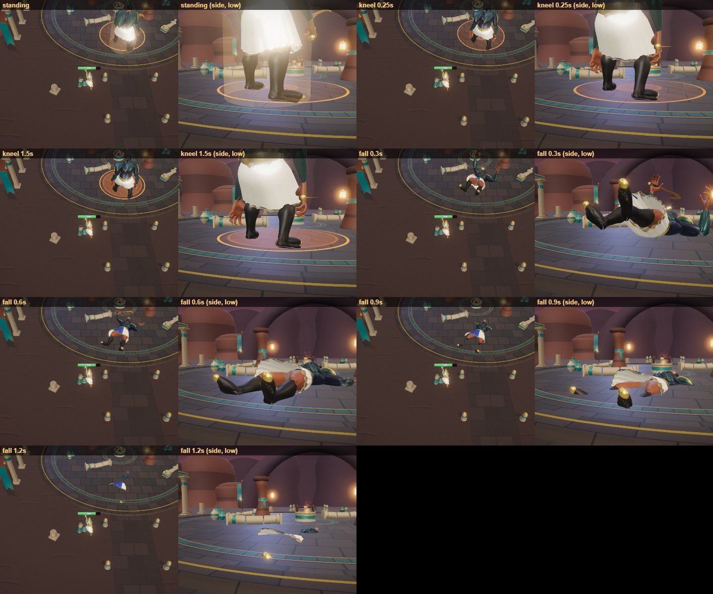
After (+0.03 m):
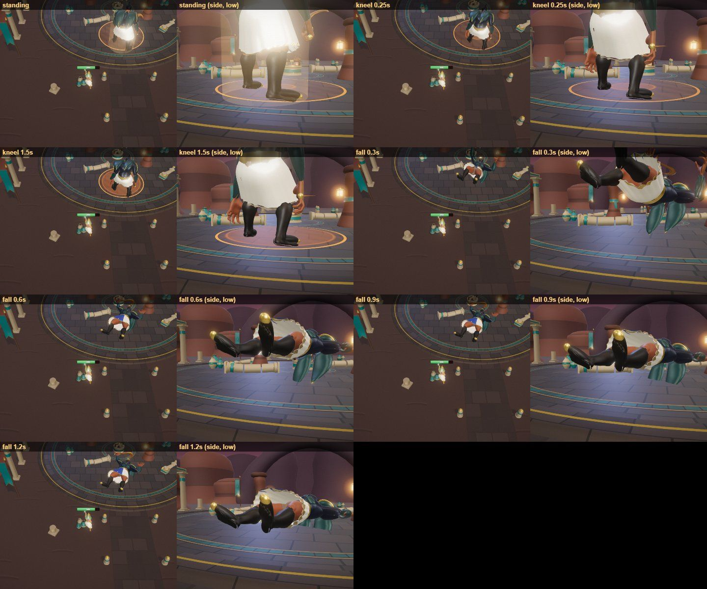
The Crow King, floor 46
Before (-1.15 m):
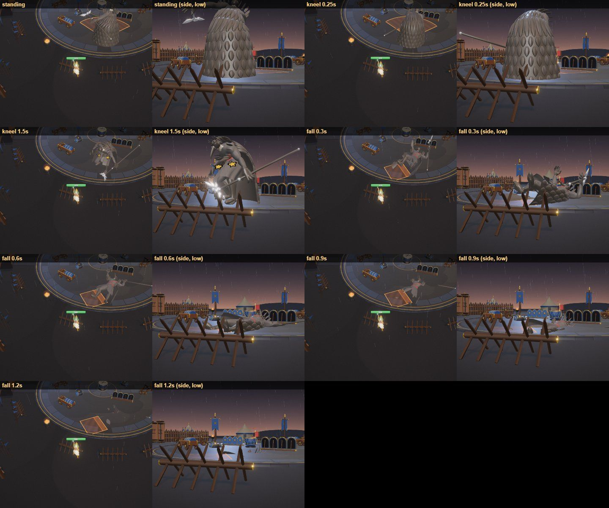
After (0.00 m every frame of the fall):
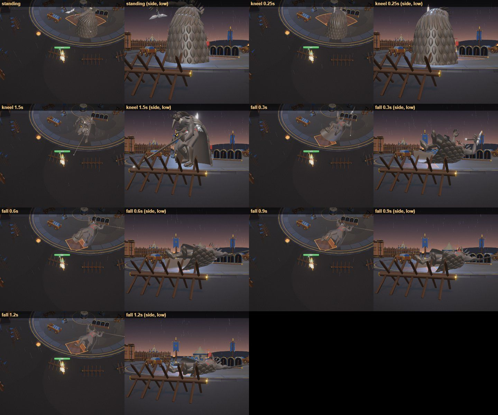
All 15 rulers at the end of the fall, from the side (before | after)
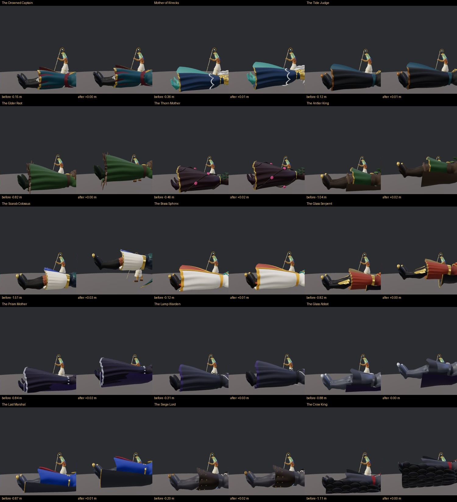
| Ruler | Lowest, fallen: before | after |
|---|---|---|
| The Scarab Colossus | -1.52 | +0.03 |
| The Crow King | -1.11 | +0.00 |
| The Antler King | -1.04 | +0.02 |
| The Glass Abbot | -0.88 | -0.00 |
| The Last Marshal | -0.87 | +0.01 |
| The Prism Mother | -0.85 | +0.02 |
| The Elder Root | -0.83 | +0.00 |
| The Glass Serpent | -0.82 | +0.00 |
| The Thorn Mother | -0.46 | +0.02 |
| Mother of Wrecks | -0.36 | +0.01 |
| The Lamp Warden | -0.31 | +0.03 |
| The Siege Lord | -0.20 | +0.02 |
| The Drowned Captain | -0.15 | +0.00 |
| The Brass Sphinx | -0.12 | +0.01 |
| The Tide Judge | -0.12 | +0.01 |
Metres at each ruler's first floor's size, its body's lowest point other than the feet (ruler-react.js). Standing,
flinching and the knock-up are unchanged.
2. A kneeling ruler holds its staff up
The pack's kneel lets the arm hang, so the Crow King's staff hung head-down with its silver head on the floor. Holding it upright in its usual hold did not work: on the crouched body its foot went a metre into the floor (tried, measured, dropped). Now the staff arm keeps its hold and the hand is turned so the staff stands. Its head leans back to the shoulder only as far as it must to keep the foot on the floor, planted in front.
The Crow King in his door fight, kneeling: before (left pair), after (right pair):
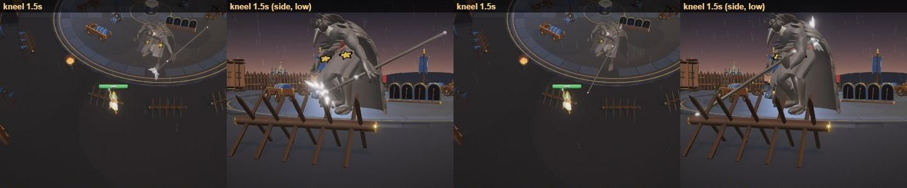
The five staff rulers, 1.5 s into the kneel, three views (the game's camera, the side, the front); each: before | after:
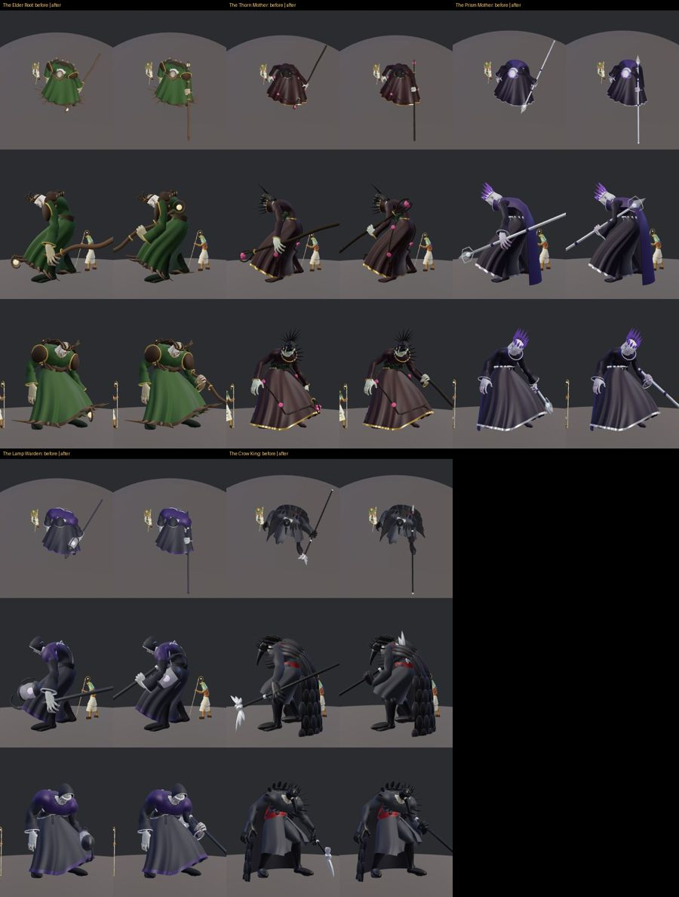
None of the five staffs is under the floor; the lowest point of each kneel is its gown or cloak, as before (the Crow King's cloak -0.27 m, as in round 2). Worth your eye: all five now kneel with the staff up, not only the Crow King. That was the simplest rule to keep alike.
3. Ash's feet on the floor
His legs are rigid blocks hanging from his torso. When a cast crouched him, they went down with it. Now each leg is lifted straight up just enough to stand on the floor, so it pushes up into his body. Each move was cast for real through his boss link in his own room, and pictured at its wind-up and its strike. Lowest point of his legs (m):
| Moment | Before (left, right) | After |
|---|---|---|
| Standing | +0.05, +0.03 | +0.05, +0.03 |
| Ground Slam, strike | -1.00, -1.04 | 0.00, 0.00 |
| Charge, wind-up | -1.10, -1.07 | 0.00, 0.00 |
| Drag Under, wind-up | -0.93, -0.92 | 0.00, 0.00 |
| Knuckle Quake, strike | -0.91, -0.93 | 0.00, 0.00 |
| Cinder Rock, wind-up | -0.29, -0.43 | 0.00, 0.00 |
| Kneeling | -2.02, -2.06 | 0.00, 0.00 |
| Fallen | -2.02, -2.34 | 0.00, 0.00 |
| A real fight, 17 s (the lowest) | -1.28 (Charge) | 0.00 |
His fists still strike into the floor in the slam and the quake, as the Sun Warden's do (round 2 found that right), and in the fall his body still sinks as it folds forward.
The real fight, the Charge's wind-up (above before, below after; left the game's camera, right from the side at floor height):
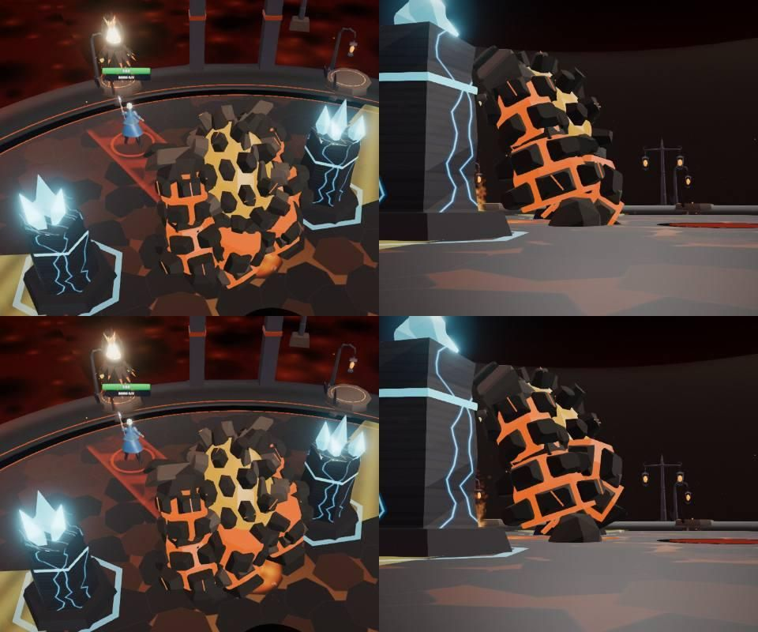
Clip before (12 s: the Charge, its run, the trail, the quake)
Clip after
Every move, two views each. Before:
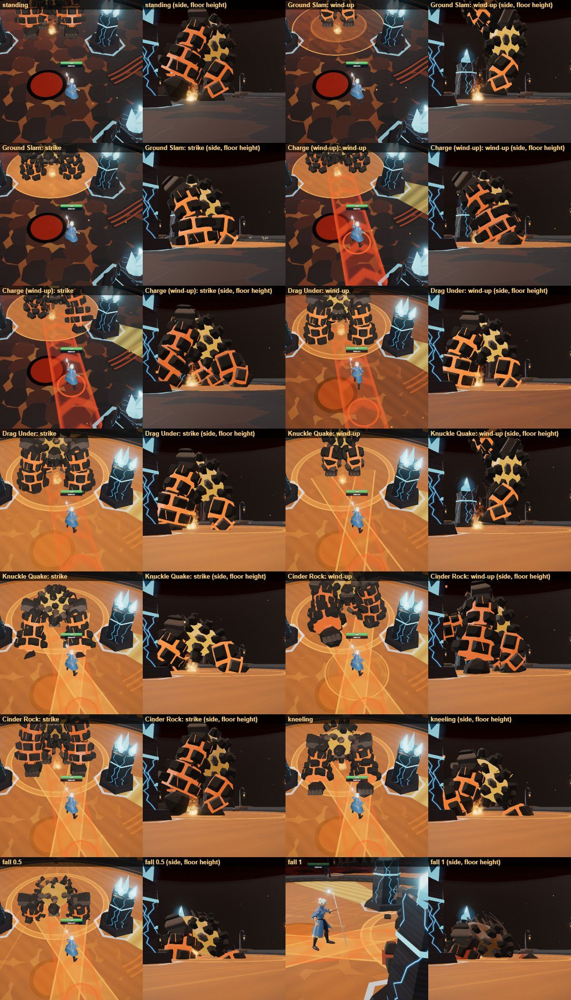
After:
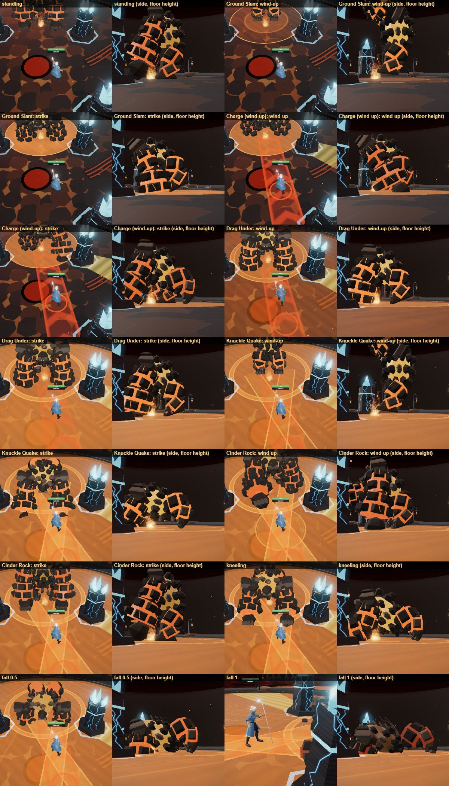
4. The Heart of Noon's crown
In its last phase (Noon Falls) the crown turned on and on, a full turn about every two and a half minutes, so its long upper rays came round underneath into the floor. Turning it by hand showed its long rays reach the floor after only about half a radian (30 degrees) of turn, so "stop short of half a turn" would not have been enough. Now in the last phase it sways to and fro, up to about 20 degrees either way, quicker in the Crown of Rays.
| Lowest point of the crown (m) | Before | After |
|---|---|---|
| Two minutes of the last phase, the lowest | -1.09 (70 s in) | +0.81 |
| Crown of Rays (wind-up, strike, after) | +1.29, +2.20, +1.66 | +1.60, +2.03, +1.71 |
| Kneeling | +0.66 (the turn stood where it was; 1.7 m under in round 2) | +1.78 |
60 s into the last phase, a Crown of Rays (above before: the long ray down at the left; below after: the long rays up):
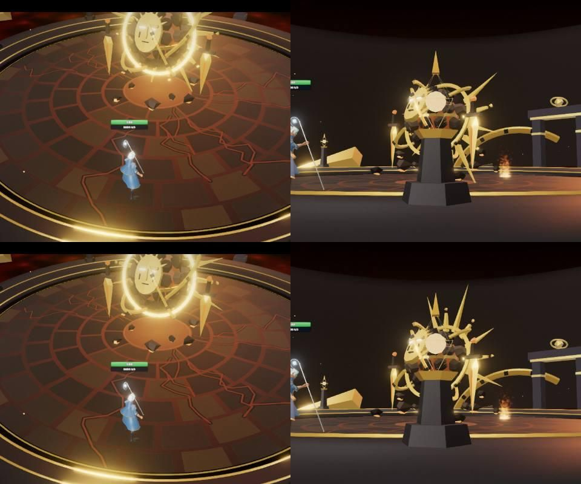
Clip before (10 s at 60 s into the phase)
Clip after
Every 15 s of the phase, the Crown of Rays and the kneel, two views each. Before:
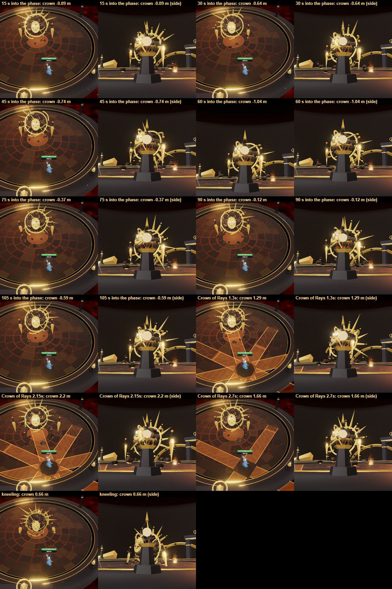
After:
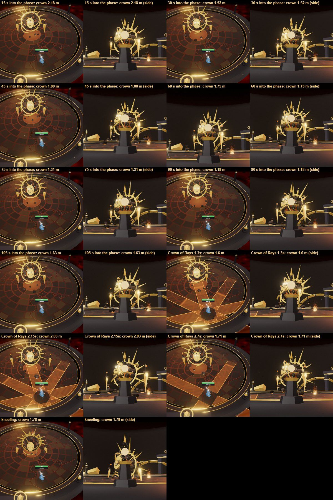
5. Ash on the lava?
Round 2 saw Ash past the floor's edge once, with the tool holding the hero near the edge. Measured in a real fight (his brain choosing,
40 s, and the clip's run): his middle never goes past 14.61 m from the room's middle; the floor ends at 16 m. The Charge runs
through you to the edge and stops 1.4 m short of it (the rule in src/raid/ashEmber.ts, chargeEnd; the move ends in
a skid "up against the lip"). His body is about 1.8 m wide from its middle (his hit circle), so his shoulders and plates hang 0.4 m and more
over the stone lip ring. From the steep game camera his 5.8 m-tall body is drawn out over the lava beyond, and that is what the picture
showed. A player standing at the edge in his way sees the same, and nothing else happens: he does not leave the floor.
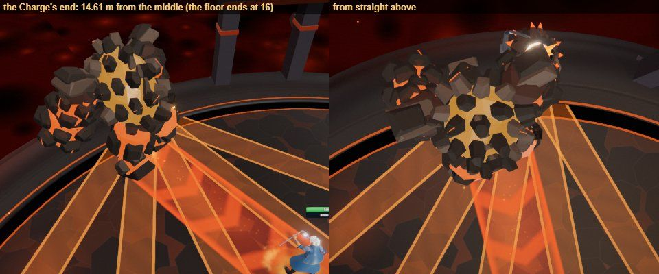
The smallest change, if you want him fully on the floor: stop the Charge 1.8 m short instead of 1.4 m. That shortens the deadly run by 0.4 m at the edge, which is a fight rule, so it is not done; it waits for a yes. (The Twin Forge and the party rooms were not measured.)
Proof that no fight changed
Perf prints (each a hash of a fixed fight's health and places every second), desktop, before and after on this branch:
| Scene | Before | After |
|---|---|---|
| duel-temple | 90b1abaa | 90b1abaa |
| raid-solo | ff20c830 | ff20c830 |
| raid-party | 9c4a9c48 | 9c4a9c48 |
| raid-ash | e47e69ce | e47e69ce |
| raid-heart | d2d3cf3e | d2d3cf3e |
| world-1 (the Climb, floor 1) | 98b0044a | 98b0044a |
| world-5 (the Climb, floor 41) | b2403b4c | b2403b4c |
Hero fight prints (hero-prints.py check Anka,Kaia,Sefu): 3 of 3 the same (Anka bae036d3, Kaia cf160412, Sefu bfb83e68).
What changed in the code
src/motion/real.ts:restOnFloor(a fallen figure lies on its lowest point),plantHeld(a staff stands, planted, in the kneel).src/heroFigure.ts: both used only for the Climb's own figures (climbFigure, models undermodels/tower/).src/raid/bodies/look.ts:keepAbove(a part lifted out of the floor);src/raid/bodies/ash.tsuses it on his legs.src/raid/bodies/heart.ts: the crown's turn in the last phase is a sway (CROWN_SWAY).
Tools for this round (pipeline/tools/): ruler-fight-fall.js (a ruler's door fight: kneel and fall), ash-legs.js
(every move, the clip, the Charge's end), heart-crown.js (the turn by hand, two minutes of the phase, the clip); the rulers' numbers
from round 2's ruler-react.js. Each says at its top how to run it. No model needs rebuilding in Blender.